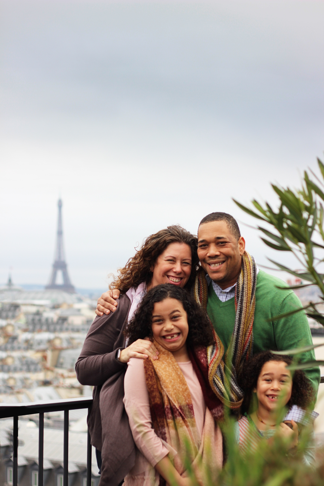

Target Audience
The target audience for this website are people around the world and also in the city of Verona, who need help with their business or would like to offer their services to people who are searching for some help solving business issues or could search for other people willing to invest some money on their ideas/business.
Zoe

Zoe is a 25-year-old student of Tourism Management at Verona College. She loves to travel around the world to discover and learn more about the local culture, customs, and traditions. She is also very good with language and she always trying to learn something new. She has to prepare her dissertation for her last exam and she decided to create a project where she will help tourists plan their vacations here in Verona. Like almost all the people of her age, Zoe us her smartphone for everything, except for preparing her dissertation. She also uses social media and is willing to create a new account for her project.
Scenario
- "How can I get in touch with someone who knows how to help me with my business?"
- "How can I find out if the person I will meet will be trustable"?
- "Does it have a cost? How much?"
- "I would like to read someone's experience with the Verona Chamber of Commerce."
Mark & Hannah
Mark and Hannah own a traveling business that manages some apartments and offer tourist packages in the main city in the US and Europe. Mark got graduated in Business Management from BYU College many years ago. While finishing his college path, met Hannah who was working part-time in a travel agency while finishing her studies in languages. Now, they are willing to expand their business in Italy. They already traveled with their family in this country and fell in love with Verona, but they know nothing about Italy's laws on tourism and housing and are searching for someone who can help them with that or even create a partnership. Mark like to work with his laptop and do almost everything with it, while Hannah loves her tablet and she uses it to answer email, fills her spreadsheet, and makes presentations for their business.
Scenario
- "How can I create my project with the Chamber of Commerce?"
- "There is a tutor who can help me?"
- "Can I create a profile about me and the services I can offer?"
- "What are the chances someone will pick me?"
- "Are they going to interview me or do I need just to fill out a form"?